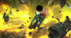

-
Capítulo 1
Gary, a punto de cumplir su condena solitario en el espacio, se encuentra con un adorable aliencito verde perseguido por unos cazarrecompensas no tan adorables.
-
Capítulo 2
Un cazarrecompensas encuentra a Mooncake a bordo de la Galaxia Uno y Avocado le ofrece ayuda a Gary para capturarlo antes de que pueda hablar con el señor comandante.
-
Capítulo 3
Gary y Avocado buscan refugio para Mooncake, pero se topan con problemas. Quinn trata de determinar la causa de la alteración gravitacional.
-
Capítulo 4
Después de la reunión con Quinn, Gary quiere impresionarla extrayendo energía de una estrella moribunda para encender los motores pirateados de la Galaxia Uno.
-
Capítulo 5
La alteración gravitacional sigue creciendo y la investigación de Gary, Quinn y Avocado los conduce a un planeta con propiedades muy extrañas.
-
Capítulo 6
Avocado recibe un mensaje de su hijo y ejectura una misión de rescate con Gary. Quinn finalmente ve todos los videos que le grabó su torpe pretendiente.
-
Capítulo 7
Gary cumple su sentencia y trata de ayudar al pequeño Cato, que solo quiere vengarse. Una visita inesperada revoluciona la nave Galaxia Uno.
-
Capítulo 8
Gary y la tripulación tienen que cerrar la ruptura en el espacio antes de que destruya la Tierra y recurren a un titán que vive entre dos dimensiones.
-

Capítulo 9
Gary y Quinn viajan a Nueva York en busca de una bomba de antimateria para salvar a la Tierra y reciben ayuda de alguien inesperado.
-
Capítulo 10
Gary y la tripulación afrontan una batalla épica contra las fuerzas del señor comandadnte. El destino de la Tierra y del universo está en sus manos.